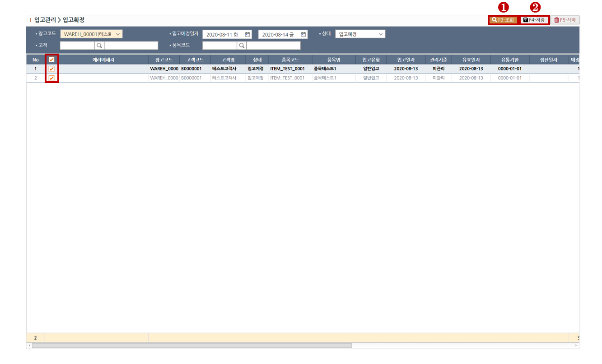

> STEP-1 상단의 조회(F2)버튼을 클릭하여 대상을 조회합니다. > STEP-2 대상을 그리드에서 체크한뒤 상단의 저장(F4)버튼을 클릭하여 대상을 입고확정합니다.

※ 에러체크사항
확정수량이 없는 경우 입고확정이 불가합니다.
관리기준에 따라 유통기한 또는 생산일자에 값이 없으면 입고확정이 불가합니다.
관리기준에 따라 유통기한 또는 생산일자가 유효일자보다 작으면 입고확정이 불가합니다.
입고하려는 창고에 존/로케이션/랙 정보가 없으면 입고확정이 불가합니다.